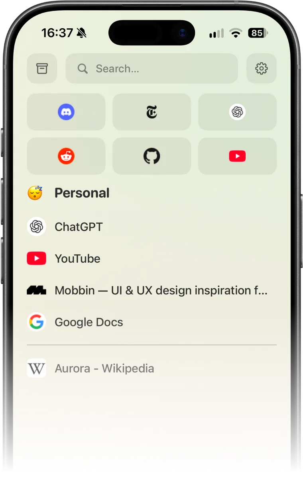
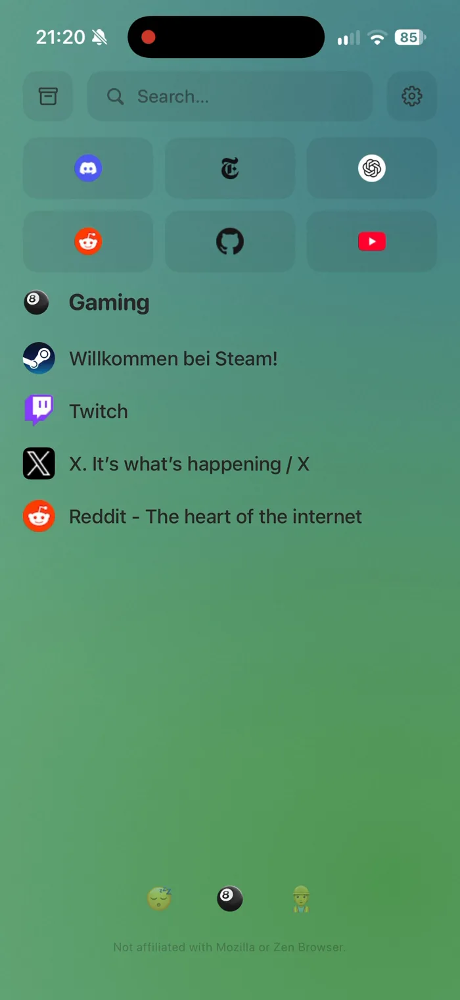
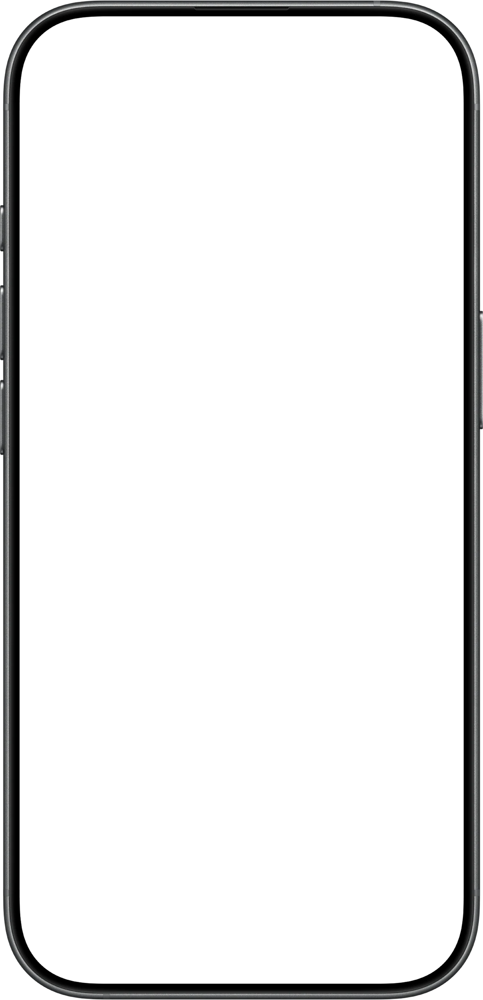
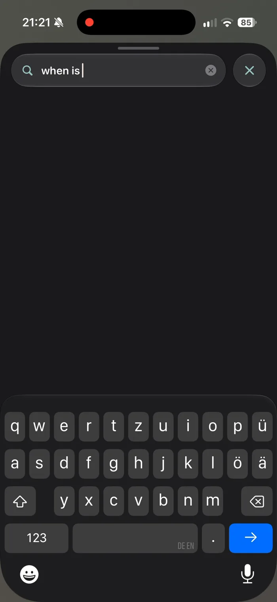
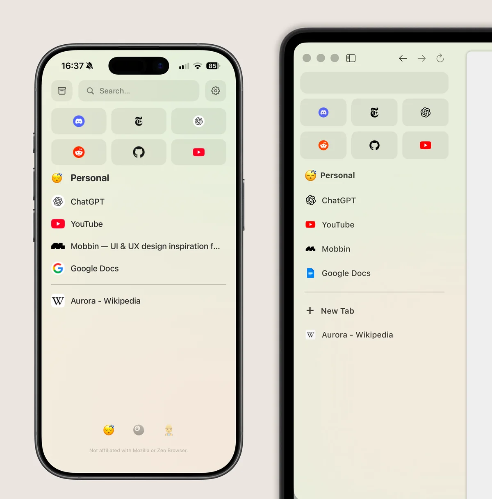

Your tabs and spaces
on the go.
Z-Sync syncs your spaces, pinned tabs and essentials from Zen Browser to iPhone and Android.
Independent app. Not affiliated with Zen.





Two separate apps, one Mozilla account.
Z-Sync is an independent app that syncs with Zen Browser over Firefox Sync. Sign in with your own Mozilla account and your spaces, pinned tabs and essentials are on your phone. Changes travel both ways, so a tab you save on your phone is waiting in the browser.
Your Mozilla account
Firefox Sync
- Desktop Zen Browser
- iPhone & Android Z-Sync
Take your spaces with you.
Free and ad-free.
Sign in with the Mozilla account you already use.
Z-Sync is open source under the MIT licence.